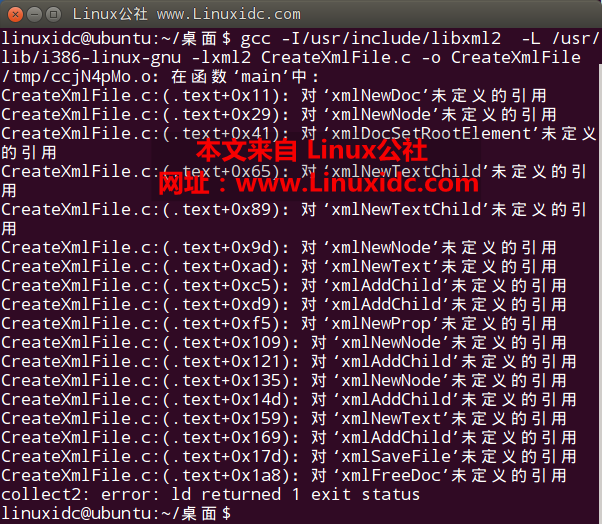

The use of libxml2
2017年12月22日 星期五： dpkg -L libxml2-dev 查看libxml头文件和链接库所在位置 对C源文件编译命令： gcc -I/usr/include/libxml2 CreateXmlFile.c -o CreateXmlFile -L /usr/lib/i386-linux-gnu -lxml2 其中，-I参数是为了指定gcc编译器查找头文件的路径，-L参数是为了指定libxml2库文件所在的路径，最后的-lxml2指定具体的库文件。（-lxml2一定要放在命令的最后位置，不然会出现找不到链接库的错误，如下图所示）  编程示例： 1、创建xml
#include<stdio.h>
#include<libxml/parser.h>
#include<libxml/tree.h>
int main(int argc, char **argv){
//Define document pointer
xmlDocPtr doc = xmlNewDoc(BAD_CAST"1.0");
//Define node pointer
xmlNodePtr root_node = xmlNewNode(NULL,BAD_CAST"root");
//Set the root element of the document
xmlDocSetRootElement(doc,root_node);
//Create child nodes directly in the root node
xmlNewTextChild(root_node,NULL,BAD_CAST"newnode1",BAD_CAST"newnode1 content");
xmlNewTextChild(root_node,NULL,BAD_CAST"newnode2",BAD_CAST"newnode2 content");
//Create a new node
xmlNodePtr node = xmlNewNode(NULL,BAD_CAST"node2");
//Create a new text node
xmlNodePtr content = xmlNewText(BAD_CAST"NODE CONTENT");
//Add a new node to parent
xmlAddChild(root_node,node);
xmlAddChild(node,content);
//Create a new property carried by a node
xmlNewProp(node,BAD_CAST"attribute",BAD_CAST"yes");
//Create a son and grandson node element
node = xmlNewNode(NULL,BAD_CAST"son");
xmlAddChild(root_node,node);
xmlNodePtr grandson = xmlNewNode(NULL,BAD_CAST"grandson");
xmlAddChild(node,grandson);
xmlAddChild(grandson,xmlNewText(BAD_CAST"THis is a grandson node"));
//Dump an XML document to a file
int nRel = xmlSaveFile("CreatedXml.xml",doc);
if(nRel != -1)
printf("一个xml文档被创建，写入 %d 个字节\n",nRel);
//Free up all the structures used by a document,tree included
xmlFreeDoc(doc);
//printf("Hello World!\n");
return 0;
}
结果：
<?xml version="1.0"?>
<root><newnode1>newnode1 content</newnode1><newnode2>newnode2 content</newnode2><node2 attribute="yes">NODE CONTENT</node2><son><grandson>THis is a grandson node</grandson></son></root>
2、解析xml
#include <stdio.h>
#include <stdlib.h>
#include <libxml/parser.h>
#include <libxml/tree.h>
int main (int argc , char **argv)
{
xmlDocPtr pdoc = NULL;
xmlNodePtr proot = NULL, pcur = NULL;
/*****************打开xml文档********************/
xmlKeepBlanksDefault(0);//必须加上，防止程序把元素前后的空白文本符号当作一个node
pdoc = xmlReadFile ("test.xml", "UTF-8", XML_PARSE_RECOVER);//libxml只能解析UTF-8格式数据
if (pdoc == NULL) //检查是否打开正确
{
printf ("error:can't open file!\n");
exit (1);
}
/*****************获取xml文档对象的根节对象********************/
proot = xmlDocGetRootElement (pdoc);
if (proot == NULL)
{
printf("error: file is empty!\n");
exit (1);
}
/*****************查找书店中所有书籍的名称********************/
pcur = proot->xmlChildrenNode;
while (pcur != NULL)
{
//如同标准C中的char类型一样，xmlChar也有动态内存分配，字符串操作等 相关函数。例如xmlMalloc是动态分配内存的函数；xmlFree是配套的释放内存函数；xmlStrcmp是字符串比较函数等。
//对于char* ch="book", xmlChar* xch=BAD_CAST(ch)或者xmlChar* xch=(const xmlChar *)(ch)
//对于xmlChar* xch=BAD_CAST("book")，char* ch=(char *)(xch)
if (!xmlStrcmp(pcur->name, BAD_CAST("book")))
{
xmlNodePtr nptr=pcur->xmlChildrenNode;
while (pcur != NULL)
{
if (!xmlStrcmp(nptr->name, BAD_CAST("title")))
{
printf("title: %s\n",((char*)XML_GET_CONTENT(nptr->xmlChildrenNode)));
break;
}
}
}
pcur = pcur->next;
}
/*****************释放资源********************/
xmlFreeDoc (pdoc);
xmlCleanupParser ();
xmlMemoryDump ();
return 0;
}